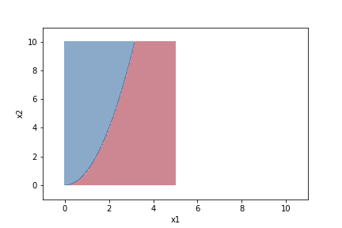

決定境界のプロット
ロジスティック回帰など分類を行うアルゴリズムがちゃんとトレーニングデータを分類できているか確認するため、決定境界をプロットする方法を学んだ。そのメモをブログに残す。
まとめ
-
np.meshgrid()で格子点を取得する。しかも、np.arange()などを使ってできるだけ細かく格子点を取得する。 - 格子点を分類器に適用するため、トレーニングデータの形状に変換する。
- 格子点に対して分類を予測する。
- 格子点とその分類の予測を
plt.contourf()を使って等高線としてプロットする。
格子点の取得
x1 = np.arange(0, 5, 0.5)
x2 = np.arange(0, 10, 0.5)
X1, X2 = np.meshgrid(x1, x2)
plt.plot(X1, X2, 'ok')
plt.xlimit(-1, 11)
plt.ylimit(-1, 11)
plt.show()

上のようにnp.meshgrid()を使うと、2つの配列x1とx2からなる平面上にある格子点を取得できる。
この格子点の間隔を小さくすると、x1とx2からなる平面上の「すべての点」を擬似的に再現できる。
x1 = np.arange(0, 5, 0.01)
x2 = np.arange(0, 10, 0.01)
# 以下同じ

格子点の変換
ある平面上の「すべての点」を分類器に適用すると、平面上に分類した結果をマッピングできるようになる。
そのために格子点をトレーニングデータの形状に変換する。つまり、$(x_1, x_2)$のようにする。
# flatにする
X1_flatten = X1.ravel()
X2_flatten = X2.ravel()
# 結合して行列にする
X = np.array([X1_flatten, X2_flatten])
# 行方向がトレーニングデータ、列方向がフィーチャーになるように転置する
X = X.T
格子点を分類器に適用する
Z = classifier.predict(X)
上で分類器に適用できるように変換できたので、あとは予測する。
等高線図でプロットする
# プロットできるように形状を揃える
Z = Z.reshape(X1.shape)
plt.contourf(X1, X2, Z, cmap='RdBu', alpha=0.5)
plt.xlim(-1, 11)
plt.ylim(-1, 11)
plt.xlabel('x1')
plt.ylabel('x2')
plt.show()

（上図は適当な関数を適用しただけです）
plt.contourf()は等高線図を引きつつ、領域を塗りつぶしてくれるので決定境界をプロットするのに便利。